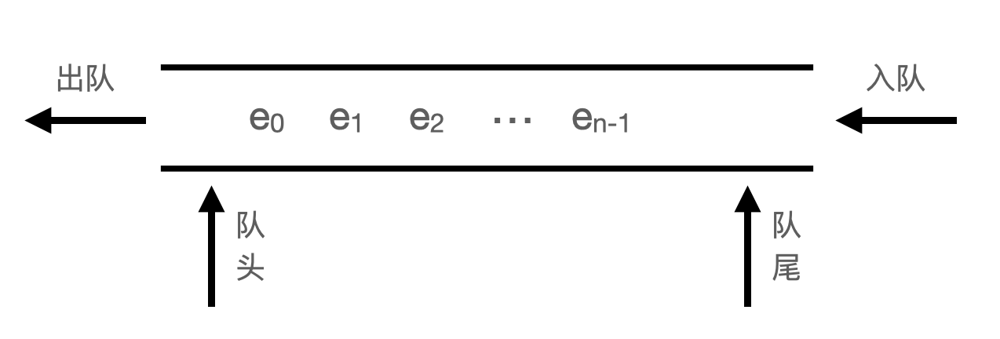
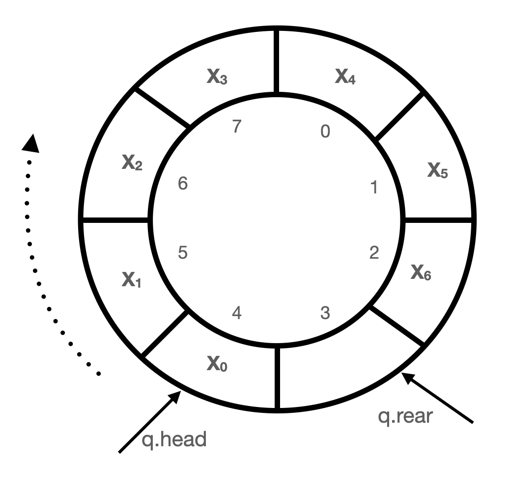

1 概述
队列 ( Queue )是一种先进先出( first in first out )的线性数据结构，插入操作在队尾( rear )进行, 删除操作的队头( front )进行。

2 队列的抽象数据类型
ADT Queue:
Queue(self) #创建空队列
enqueue(self, elem) #向队尾插入项
dequeue(self) #返回队首的项，并从队列中删除该项
is_empty(self) #判断队列是否为空，空时返回True，否则返回False
peek(self) #查看当前队列中最早进入的元素(注意: 不删除)除了以上的操作，还可能定义size(self)等操作
3 队列的实现
在实现队列结构之前，先考虑为操作失败的处理定义一个异常类，具体定义如下：
class QueueUnderflow(ValueError):
pass3.1 队列的链接表实现
队列操作要求先进先出，从线性顺序来看，这就要求在表的两端进行操作，可以借鉴带有尾端指针的单链表来实现队列。
class LNode(object):
def __init__(self, elem, next_=None):
self.elem = elem
self.next = next_
class LQueue(object):
def __init__(self):
self._head = None
self._rear = None
def enqueue(self, elem):
if not self._head:
self._head = LNode(elem, self._head)
self._rear = self._head
else:
self._rear.next = LNode(elem)
self._rear = self._rear.next
def dequeue(self):
if self._head is None:
raise QueueUnderflow("in dequeue")
e = self._head.elem
self._head = self._head.next
return e
def peek(self):
if not self._head:
raise QueueUnderflow("in dequeue")
return self._head.elem
def is_empty(self):
return self._head is None
3.2 队列的顺序表实现
考虑一种用循环可扩容的顺序表来实现队列。

class SQueue(object):
def __init__(self, init_len=8):
self._len = init_len
self._elems = [0]*self._len
self._head = 0
self._num = 0
def is_empty(self):
return self._num == 0
def peek(self):
if self._num == 0:
raise QueueUnderFlow("in peek")
return self._elems[self._head]
def dequeue(self):
if self._num == 0:
raise QueueUnderFlow("in peek")
e = self._elems[self._head]
self._head = (self._head + 1) % self._len
self._num -= 1
return e
def enqueue(self, e):
if self._num == self._len:
self.__extend()
self._elems[(self._head + self._num) % self._len] = e
self._num += 1
def __extend(self):
old_len = self._len
self._len >>= 1
new_elems = [0] * self._len
for i in range(old_len):
new_elems[i] = self._elems[(self._head + i) % old_len]
self._elems, self._head = new_elems, 04 队列的应用
在广度优先搜索遍历中，经常使用队列。
5 参考
[1] 《数据结构与算法 Python语言描述》 裘宗燕 著 机械工业出版社， 2015.12